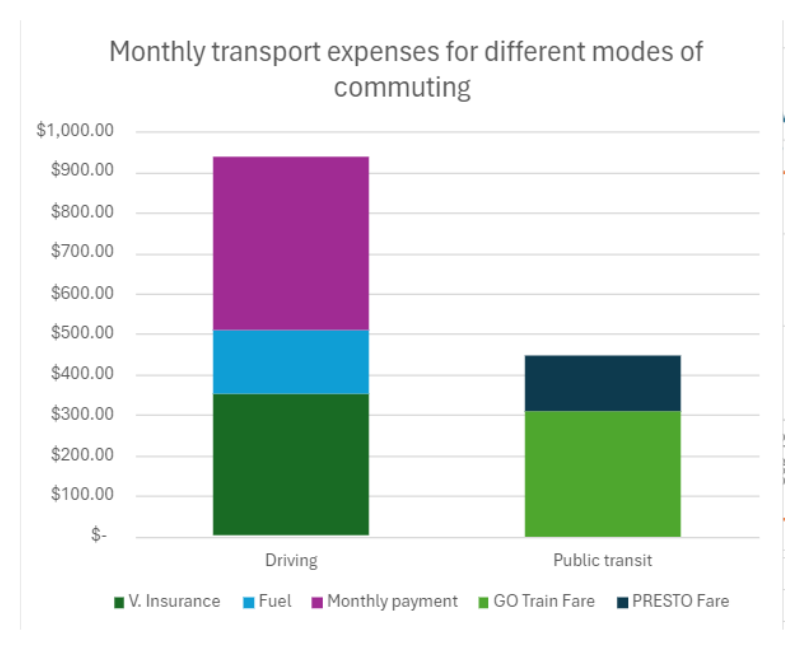

June 6, 2025 by Josh Villas
This might sound like it was written by a high schooler, because it was. This was my final research project for my Grade 12 Data Management class, which might explain the tone. Nevertheless, urbanist topics like this one interest me to this day and I'm quite proud that I decided to dedicate my Culminating Performance Task to learn more about this.
One of the most important investments many Torontonians make in their lives are in the gas-guzzling cars we drive to work. As the cost of living in many Canadian cities has increased drastically over the last few years, paying for a car, insurance, fuel, and even a place to keep the car, have become huge costs taken out of the paycheck of many Canadians. Additionally, one of the most prominent contributions to carbon emissions in most of our everyday lives are in these cars!
One would think that a great solution for many right now would be to abandon the car. Sharing public transit and riding bicycles everywhere are much more friendly to the wallet and the environment than driving alone, but not everyone gets the opportunity to. How easy that is seems to depend on where you live, and people in the densest cities seem to have it figured out.
Figure 1a: Population Density and Commute Modal Share by City (Census 2021)
These are the population densities and modal shares of select Canadian cities according to the 2021 Canadian Census. Canada’s less dense cities have the most daily drivers per capita, with their commuters overwhelmingly preferring to get to work in the front seat of their cars. On the other hand, people in higher density cities tend to drive less, preferring alternative options like public transit and even cycling. In Vancouver, 18.4% of all commutes are done by active transportation, meaning almost 1 in 5 people cycle every morning!
And if we plot the share of car usage against the population density of each city, we get this graph in Figure 1b.
Figure 1b: Car modal share vs. population density (Census 2021)
The share of car usage in daily commutes is negatively correlated with a city’s population density with a correlation coefficient of -0.96, albeit with a fairly small sample. Although we can see a trend, we can’t be so certain as to what the causes and effects are.
So why exactly are cars less popular in dense cities? First, let’s examine commute modal shares based on where the route starts and ends.
Figure 2: Modal share of commutes by location of origin and location of destination. (Diab et al. 2019)
Figure 2 shows the modal share of commutes made in Greater Toronto based on their start and end location. Now that we are consistent with the same city, we can more easily compare different routes.
It seems that the way people commute is based on whatever the most convenient transit option is in the direction they are going.
People living and working in Toronto, which has the 3rd largest bus system in North America, take transit much more than those working in other areas. Those that live and work in the very heart of the city even have the privilege of walking and cycling to work! But those that live and work in other regions, with less developed transit systems predominantly drive every morning.
Interestingly though, those who live outside of Toronto (in the cities with less developed transit) but work downtown overwhelmingly travel by GO commuter rail, presumably because it is the most convenient option. But why exactly would commuter rail be the most convenient?
There is, of course, the mental relief of being driven instead of having to drive yourself. It’s easier to sit and relax in a GO train than to actively use your brain to navigate and drive. But GO train ridership might not just be about the benefits of commuter rail; it might also be about the drawbacks of driving downtown (Diab).
According to recent traffic data released by navigation and location technology company TomTom, Toronto commuters drove an average speed of just 18 km/h at rush hour. That is 2.5 times slower than the average speed of a GO train, which if you include stops, moves around the city at 45 km/h. For commuters who would have to drive through congested roads, it would be a no-brainer to take a train that can bypass all traffic.
So while trains have their benefits, their increased ridership may also simply be in part be due to traffic problems in Toronto.
With the cost of living being as high as it is in cities like Toronto, people have to save money. One of the biggest expenses to consider in a budget other than housing is transportation. As it turns out, cars are expensive items to own as you have to spend money on fuel, insurance, as well as the car itself. But how expensive is that really? First, how much money you spend on fuel is tied to how efficient your car uses it.
Figure 3: Distribution of fuel consumption of personal vehicles. (Natural Resources Canada 2023)
Note: the standard deviation for the distribution in Figure 3 is 2.87 L/100km. Any value with a z score greater than 3, or a fuel consumption more than 19.7 L/100km is considered an outlier and was not considered.
In the dataset from Natural Resources Canada, we see that the median gas consumption is 10.7 L/100 km. According to a study by Moovit, the average Torontonian commutes 12 kilometres each way (Moovit). Combining fuel efficiency with the average commute distance, we can get the average fuel used per commute. Combining that with historical fuel price data from Statistics Canada, we get this graph:
Figure 4: The cost of 12 km of driving vs. PRESTO fares since 2009 (Natural Resources Canada 2023)
This graph shows how much the fuel for an average one-way commute costs compared to a comprehensive PRESTO fare. Both have been naturally increasing over time due to inflation, as shown by the line of best fit. But what the PRESTO fares didn’t do was fluctuate. Excluding the pandemic, the price of fuel has stayed fluctuating at and above the price of PRESTO fares.
We can see here that for daily commutes, the price of fuel alone is more expensive than public transport fares.

Figure 5: Monthly expenses on transport, by mode of commute.
When factoring in the car’s financing, insurance, or even parking, it adds hundreds to your monthly budget. For the majority of people living in a city where a one bedroom apartment costs $2,600 per month [Freeman], taking transit to save hundreds of dollars is absolutely essential if they want to build their wealth at all. Additionally, the unpredictable fluctuations in cost add uncertainty that someone living paycheck to paycheck will not be able to handle.
People working in the densest cities drive the least, and for good reasons. First, riding a train is simply much easier than having to navigate yourself in a car through a dense city’s stop-and-go traffic every morning. Driving in Toronto at rush hour is just unbearably slow, so they’re better off taking a train that completely avoids that traffic. Additionally, driving is just way more expensive. With the insane cost of living in a city like Toronto, people have to save money on things they don’t need to survive.
An important variable that was not studied here (due to lack of information) is the safety of those riding public transit. Some people feel unsafe enough on transit that the safety value from driving becomes more valuable than the money saved on transit. Future studies can analyze the monetary value that people would put on transit safety; that is, how much money-saving they would give up to ensure their safety.
Another variable overlooked in this report is the nature of the jobs these commuters were working. Blue collar workers who need to constantly move equipment around are not going to be taking public transit. They need a personal vehicle, unlike a banker working in the financial district. So if you manage to land a job in the city, consider not driving (if you feel safe enough).
Diab, Ehab, et al. “Commuting Mode Shares in the Commuter Rail Catchment Areas: Trends, Status, and the Role of Policy Interventions in the Case of GO Transit in Greater Toronto”. 17 January 2019. https://www.researchgate.net/publication/330133451_Commuting_Mode_Shares_in_the_Commuter_Rail_Catchment_Areas_Trends_Status_and_the_Role_of_Policy_Interventions_in_the_Case_of_GO_Transit_in_Greater_Toronto. Accessed 17 January 2024.
← Back to Blog